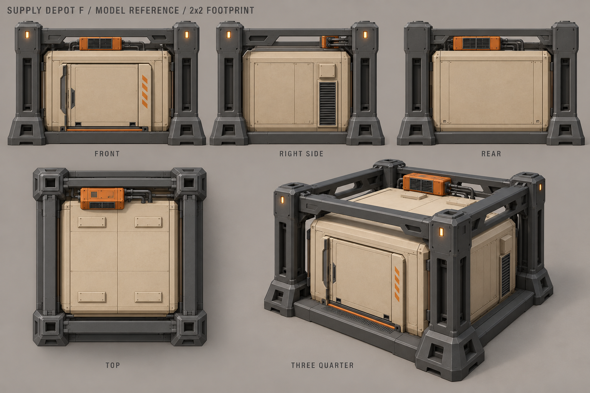
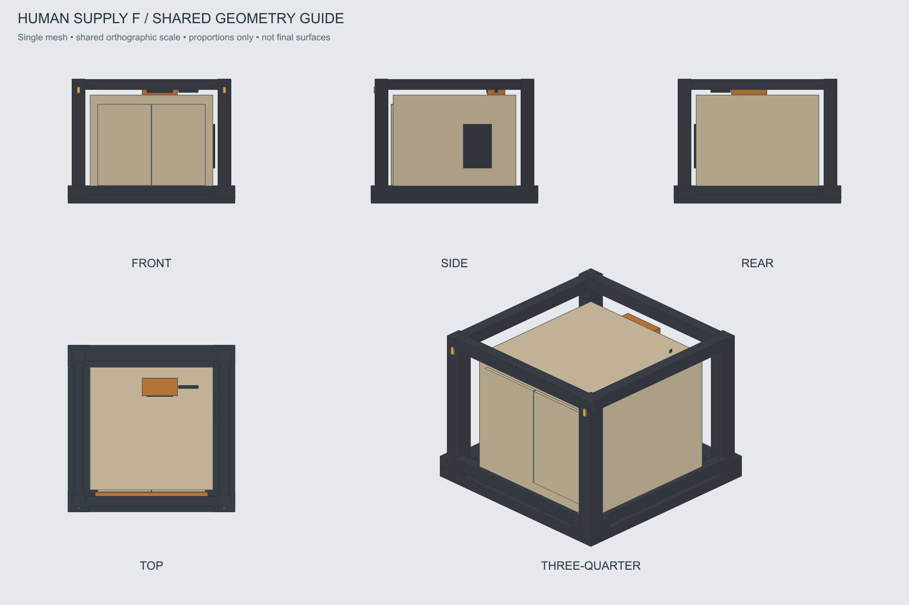

Склад снабжения · F «Склад в раме»
Выбран 28 октября 2026. Закрытый контейнер в графитовой раме, квадратное пятно 2×2.
Паспорт моделирования · OBJ-каркас · История A–H
Выбранный основной вид

Пять художественных ракурсов

Контрольные проекции одной сетки

Каркас фиксирует пропорции и квадрат 2×2; материалы и детальные оболочки — по основному виду. Это референсы и грубый объём, детальная игровая модель ещё не сделана.